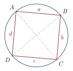
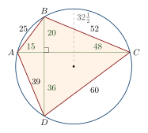

Chapter 4: Brahmagupta: Zero, Negative Numbers and Algebra¶
Brahmagupta’s Brāhmasphuṭasiddhānta (“The correctly established doctrine of Brahmā”), completed in 628 CE, is one of the most important works in the history of mathematics. Its chapter on algebra contains the earliest surviving systematic rules for calculating with positive and negative quantities and with zero; methods for equations in one and several unknowns; and a far-reaching treatment of the indeterminate quadratic equation now called “Pell’s equation”. Its chapter on arithmetic and geometry includes the formula for the area of a cyclic quadrilateral that bears his name. Brahmagupta was also a combative critic of his predecessors, and his work became the foundation of the astronomical tradition of western and northern India, and, through Arabic translations, of early Islamic astronomy (Plofker 2009; Colebrooke 1817).
4.1 Brahmagupta and His Works¶
At the end of the Brāhmasphuṭasiddhānta (24.7–8) Brahmagupta states that he composed it at the age of thirty, in Śaka 550 (628 CE), during the reign of King Vyāghramukha of the Cāpa dynasty. The work was written at Bhillamāla (modern Bhinmal in southern Rajasthan), and later writers call Brahmagupta “the teacher from Bhillamāla”. He was thus born in 598. His second work, the Khaṇḍakhādyaka, a practical astronomical handbook (karaṇa) based largely on Āryabhaṭa’s midnight system, is dated 665 CE. Nothing else is known of his life. Later stories making him the head of an observatory at Ujjain have no early basis (Plofker 2009; Pingree 1981).
The Brāhmasphuṭasiddhānta has twenty-four chapters, to which a twenty-fifth, the Dhyānagrahopadeśa, is sometimes added. Two are mathematical:
-
Chapter 12, Gaṇita (“calculation”): the twenty operations and eight determinations of arithmetic, including series, plane figures, excavations, piles, sawing, heaps of grain and shadows.
-
Chapter 18, Kuṭṭaka (“the pulveriser”), which treats the pulveriser itself, the rules for positive and negative numbers and zero, the operations with unknowns, equations, and the indeterminate quadratic equation.
An important commentary was written by Pṛthūdakasvāmin in 864 CE; much of what we know of the notation used for Brahmagupta’s algebra comes from it. Colebrooke translated chapters 12 and 18 into English in 1817 (Colebrooke 1817).
4.2 Positive and Negative Quantities and Zero¶
Brahmagupta calls a positive quantity dhana (“wealth”) and a negative quantity ṛṇa (“debt”); zero is śūnya or kha. In verses 30–35 of chapter 18 he gives rules for adding, subtracting, multiplying and dividing these quantities, and for squaring them and taking roots. Table 4.1 summarises the rules in modern notation, with \(a, b > 0\).
| Operation | Rules |
|---|---|
| Addition | \(a + b\) positive; \((-a)+(-b)\) negative; a positive and a negative give their difference; \(a + 0 = a\), \((-a)+0 = -a\), \(0+0=0\) |
| Subtraction | a larger subtracted from a smaller gives a negative; \(0 - (-a) = a\), \(0 - a = -a\); subtracting a negative is adding the positive |
| Multiplication | positive \(\times\) positive and negative \(\times\) negative are positive; positive \(\times\) negative is negative; any quantity times zero is zero |
| Division | positive \(\div\) positive and negative \(\div\) negative are positive; positive \(\div\) negative is negative; \(0 \div a = 0\); \(0 \div 0 = 0\); \(a \div 0\) is a quantity “having zero as divisor” (khaccheda) |
| Squares and roots | the square of a positive or of a negative is positive; the square of zero is zero |
Almost all of these rules are those of modern arithmetic. Two need comment. Brahmagupta’s statement that zero divided by zero is zero is not accepted today: \(0/0\) is undefined. And he leaves \(a/0\) as a quantity with zero in the denominator without saying what its value is. Mahāvīra and Bhāskara II later tried other answers, compared in Table 7.2; none is a modern treatment of division by zero, but together they show authors trying to integrate zero into the system of operations rather than treating it as a mere gap (Plofker 2009; Colebrooke 1817).
Historical Note: Negative numbers in other traditions
Brahmagupta’s rules are the earliest known systematic treatment of zero as a quantity that can be operated on. Negative quantities, however, had been used earlier in China: the Nine Chapters on the Mathematical Art (compiled by about the first century CE) gives rules for adding and subtracting positive and negative numbers, represented by red and black counting rods, in the solution of systems of linear equations. In Europe negative numbers remained suspect much longer; in 1545 Girolamo Cardano still set negative solutions apart as fictitious. Islamic algebraists of the ninth century, such as al-Khwārizmī, avoided negative quantities as solutions, although later authors used them in calculation (Katz 2009; Plofker 2009).
Worked examples with Brahmagupta’s rules of signs
-
A fortune of 5 and a debt of 8 together make a debt of 3: \(5 + (-8) = -3\).
-
A debt of 3 taken away from nothing gives a fortune of 3: \(0 - (-3) = 3\).
-
A debt multiplied by a debt gives a fortune: \((-4)\times(-6) = 24\); a fortune by a debt, a debt: \(4 \times (-6) = -24\).
-
A debt divided by a debt gives a fortune: \((-12)\div(-3) = 4\).
-
The square of a debt is a fortune: \((-7)^2 = 49\). The square root of 49 may therefore be taken as either \(7\) or \(-7\), a point used by later authors when discussing the two roots of a quadratic equation (Chapter 5).
4.3 Algebra: Unknowns and Equations¶
4.3.1 The operations with unknowns¶
Brahmagupta calls the unknown quantity avyakta (“unmanifest”) and the known vyakta or rūpa (“form”, the absolute term). When several unknowns are needed, the first is called yāvattāvat (“as much as so much”) and the others are named after colours: kālaka (black), nīlaka (blue), pītaka (yellow), and so on. He gives rules for adding, subtracting and multiplying expressions in unknowns and their powers, and for “surds” (karaṇī), quantities under a square root sign.
Brahmagupta’s own manuscripts do not show how equations were written, but the commentators, beginning with Pṛthūdakasvāmin, use a notation that later became standard. Each unknown is abbreviated by its first syllable (yā, kā, nī); a square is marked by va (for varga) and a product by bhā (for bhāvita); the absolute term is marked rū; a negative coefficient is marked with a dot over the number; and an equation is written by placing its two sides one above the other. Thus the equation \(10x - 8 = x^2 + 1\) would be written roughly as
This is a genuine symbolic notation, in which the arithmetic of polynomials can be carried out mechanically, although it has no symbols for operations or for equality.
4.3.2 Linear and quadratic equations¶
Brahmagupta gives the rule for an equation in one unknown, of the form \(ax + b = cx + d\): subtract the unknowns on one side from those on the other, and the absolute terms likewise, and divide. For the quadratic equation, which he writes in the form \(ax^2 + bx = c\), his rule (18.44) amounts to
and he gives a second form of the same rule. Only the positive root is taken. He also solves systems of linear equations in several unknowns by elimination, and gives many examples of problems leading to such equations.
Worked examples
A linear equation. Solve \(10x - 8 = x + 19\). Subtracting the unknowns, \(9x\); subtracting the absolute terms, \(27\); so \(x = 27/9 = 3\).
A quadratic equation. Solve \(x^2 - 10x = -9\), written as \(ax^2 + bx = c\) with \(a = 1\), \(b = -10\), \(c = -9\). The rule gives
Check: \(81 - 90 = -9\). (The second root, \(x = 1\), is obtained by taking the square root as negative; Brahmagupta’s rule gives only one root, and the discussion of two roots comes later.)
Two unknowns. Two numbers have sum 20 and difference 6. Then the larger is \((20+6)/2 = 13\) and the smaller \((20-6)/2 = 7\)—a rule found in all the arithmetic texts under the name saṅkramaṇa.
4.4 The Cyclic Quadrilateral¶
4.4.1 Brahmagupta’s formula¶
In chapter 12 (verse 21) Brahmagupta gives two rules for the area of a quadrilateral with sides \(a, b, c, d\). The “gross” (approximate) area is the product of the half-sums of opposite sides. The “accurate” area is: from half the sum of the sides subtract each side in turn, multiply the four remainders, and take the square root. With \(s = \tfrac{1}{2}(a+b+c+d)\),
This formula is correct only for a quadrilateral that can be inscribed in a circle (a cyclic quadrilateral; Figure 4.1). Brahmagupta does not state this condition explicitly, but his other rules show that he was dealing with quadrilaterals inscribed in circles, and later commentators made the condition explicit. If one side is made zero the formula becomes Heron’s formula for the triangle, \(\sqrt{s(s-a)(s-b)(s-c)}\), which was known in Greek mathematics (Heron of Alexandria, 1st century CE). A formula for the area of a general quadrilateral, of which Brahmagupta’s is a special case, was published in Europe by C. A. Bretschneider and others in 1842 (Plofker 2009; Sarasvati Amma 1979).

Scholarly Note: Why the formula holds
A modern proof runs as follows. In a cyclic quadrilateral \(ABCD\) with \(AB = a\), \(BC = b\), \(CD = c\), \(DA = d\), the opposite angles \(B\) and \(D\) add up to two right angles, so \(\sin D = \sin B\) and \(\cos D = -\cos B\). The diagonal \(AC\) can be computed from either triangle:
which gives \(\cos B = \dfrac{a^2 + b^2 - c^2 - d^2}{2(ab+cd)}\). The area is \(K = \tfrac12(ab + cd)\sin B\), so
and factorising each bracket as a difference of squares gives \(16(s-a)(s-b)(s-c)(s-d)\). Brahmagupta’s own reasoning is not recorded, and this modern route, using trigonometric cosines, is not the one an Indian commentator would have taken; Indian demonstrations worked with the diagonals, the perpendiculars dropped on them and the rule of the right triangle.
4.4.2 Diagonals and Brahmagupta’s theorem¶
Brahmagupta also gives the diagonals of a cyclic quadrilateral in terms of its sides (12.28). With sides \(a,b,c,d\) taken in order around the circle, the two diagonals are
so that \(pq = ac + bd\), the relation known as Ptolemy’s theorem. The two formulas can be checked from Ptolemy’s theorem together with a second relation for cyclic quadrilaterals, \(p/q = (ad + bc)/(ab + cd)\) (the diagonals are in the ratio of the sums of the products of the sides meeting at their ends); multiplying and dividing the two relations gives \(p^2\) and \(q^2\). For the quadrilateral \(25, 39, 60, 52\), \(ac + bd = 3528\), \(ad + bc = 3640\) and \(ab + cd = 4095\), so \(p = \sqrt{3528 \cdot 3640/4095} = 56\) and \(q = \sqrt{3528 \cdot 4095/3640} = 63\), and \(56 \times 63 = 3528\). A further result now called “Brahmagupta’s theorem” concerns a cyclic quadrilateral whose diagonals are perpendicular: the line through their intersection perpendicular to any side bisects the opposite side.
4.4.3 Quadrilaterals with rational sides¶
Brahmagupta was particularly interested in figures whose sides, diagonals and area are all rational. He shows (12.38) how to construct a cyclic quadrilateral of this kind from two right triangles with rational sides \((a, b, c)\) and \((\alpha, \beta, \gamma)\): the sides are \(a\gamma\), \(c\beta\), \(b\gamma\), \(c\alpha\) (in a suitable order), and the circle has diameter \(c\gamma\). From the triangles \((3,4,5)\) and \((5,12,13)\) this gives the quadrilateral with sides 39, 60, 52, 25 inscribed in a circle of diameter 65 (Figure 4.2). Table 4.2 gives two examples of the construction, checked against the formulas above.

| From the triangles | Sides (in order) | Diagonals | Area | Circumdiameter |
|---|---|---|---|---|
| \((3,4,5)\), \((5,12,13)\) | 25, 39, 60, 52 | 56, 63 | 1764 | 65 |
| \((3,4,5)\), \((8,15,17)\) | 40, 51, 75, 68 | 77, 84 | 3234 | 85 |
In the first example, \(s = 88\) and \(K = \sqrt{63 \cdot 49 \cdot 28 \cdot 36} = 1764\). In the second, with \(a = 3\), \(b = 4\), \(c = 5\) and \(\alpha = 8\), \(\beta = 15\), \(\gamma = 17\), the sides are \(c\alpha = 40\), \(a\gamma = 51\), \(c\beta = 75\) and \(b\gamma = 68\); then \(s = 117\) and \(K = \sqrt{77 \cdot 66 \cdot 42 \cdot 49} = 3234\), and the diagonal formulas give 77 and 84. In both examples the diagonals are perpendicular, so that the area is also half their product: \(\tfrac12 \cdot 56 \cdot 63 = 1764\) and \(\tfrac12 \cdot 77 \cdot 84 = 3234\). The segments into which they cut each other are the products of the legs of the two triangles taken in pairs (\(3\cdot 5\), \(4 \cdot 12\), \(3 \cdot 12\), \(4 \cdot 5\) in the first case), which is why every length in the figure is a whole number. A simpler way of obtaining a rational cyclic quadrilateral, not the one of 12.38, is to place two right triangles with the same hypotenuse on opposite sides of a diameter: \((36,77,85)\) and \((40,75,85)\) give the quadrilateral 36, 77, 75, 40 with area \(\tfrac{1}{2}(36\cdot 77 + 40\cdot 75) = 2886\). By contrast, a quadrilateral with sides \(13, 14, 15, 16\) inscribed in a circle has an area of \(\sqrt{43680} \approx 208.998\), which is irrational: not every quadrilateral with whole-number sides has these properties.
Brahmagupta similarly constructs triangles with rational sides and area by joining two right triangles along a common side. Joining \((9,12,15)\) and \((5,12,13)\) along the side 12 gives the triangle with sides 13, 14, 15 and height 12, whose area is \(\tfrac{1}{2}\cdot 14 \cdot 12 = 84\); Heron’s formula gives the same, \(\sqrt{21\cdot 8\cdot 7 \cdot 6} = 84\).
4.4.4 Circles and π¶
For the circle Brahmagupta gives two values of the ratio of circumference to diameter: 3 for practical (“gross”) work and \(\sqrt{10}\approx 3.1623\) as the “accurate” value (12.40). The latter, a value also found in the Jain cosmological texts (Chapter 2), is less accurate than Āryabhaṭa’s \(3.1416\), which Brahmagupta criticised.
4.5 The Indeterminate Quadratic Equation¶
4.5.1 The problem¶
The most original part of chapter 18 is the treatment of the “square-nature” (vargaprakṛti) equation
where \(N\) is a given positive integer that is not a square, and whole numbers \(x, y\) are sought. More generally Brahmagupta considers \(Nx^2 + k = y^2\) for any additive or subtractive quantity \(k\) (kṣepa). In his terminology \(x\) is the “lesser root” (kaniṣṭha), \(y\) the “greater root” (jyeṣṭha), and \(N\) the “nature” (prakṛti). The equation is called “Pell’s equation” in Europe because of a mistake by Euler, who attributed to John Pell (1611–1685) a method due to William Brouncker (Weil 1984).
4.5.2 The composition rule (bhāvanā)¶
Brahmagupta’s key tool is a rule for combining two solutions into a third (18.64–65), later called bhāvanā (“production”).
Mathematical Result: The bhāvanā
If \(Nx_1^2 + k_1 = y_1^2\) and \(Nx_2^2 + k_2 = y_2^2\), then
(Taking \(y_1y_2 - Nx_1x_2\) and \(x_1y_2 - x_2y_1\) gives a second solution with the same \(k_1k_2\).)
In particular, composing a solution with itself gives
With this rule, any solution for one value of \(k\) can be turned into infinitely many solutions for the same \(k\) by composing it repeatedly with a solution of \(Nx^2+1=y^2\); and a solution with \(k = \pm 1\), \(\pm 2\) or \(\pm 4\) can be turned into a solution with \(k = 1\). Brahmagupta gives explicit rules for these cases. For instance, if \(Nx_1^2 + k = y_1^2\), composing with itself and dividing by \(k^2\) gives the rational solution \(\bigl(2x_1y_1/k,\ (y_1^2+Nx_1^2)/k\bigr)\) of \(Nx^2+1=y^2\), which is a whole-number solution when \(k\) divides both numbers.
Brahmagupta’s challenge: \(92x^2 + 1 = y^2\)
After his examples Brahmagupta remarks (18.75) that a person who can solve \(92x^2+1=y^2\) within a year is a true mathematician. The bhāvanā solves it quickly.
-
Take \(x=1\): \(92 + 8 = 100 = 10^2\). So \((x,y,k) = (1,10,8)\).
-
Compose with itself: \(x = 2\cdot 1\cdot 10 = 20\), \(y = 10^2 + 92\cdot 1^2 = 192\), \(k = 64\). Divide by \(8\) (since \(k = 8^2\)): \(x = 5/2\), \(y = 24\), \(k = 1\). Check: \(92 \cdot \tfrac{25}{4} + 1 = 575 + 1 = 576 = 24^2\).
-
Compose \((5/2, 24)\) with itself: \(x = 2 \cdot \tfrac{5}{2}\cdot 24 = 120\), \(y = 24^2 + 92\cdot\tfrac{25}{4} = 576 + 575 = 1151\).
Check: \(92 \times 120^2 + 1 = 1{,}324{,}801 = 1151^2\). This is the smallest solution.
A second example: \(83x^2 + 1 = y^2\)
-
\(83\cdot 1^2 - 2 = 81 = 9^2\), so \((x,y,k) = (1,9,-2)\).
-
Compose with itself: \(x = 2\cdot 1 \cdot 9 = 18\), \(y = 81 + 83 = 164\), \(k = (-2)^2 = 4\). Check: \(83\cdot 324 + 4 = 26896 = 164^2\).
-
Divide by 2 (since \(k = 2^2\)): \(x = 9\), \(y = 82\). Check: \(83 \cdot 81 + 1 = 6724 = 82^2\).
So \((9, 82)\) is the smallest solution.
4.5.3 The special additive quantities¶
Brahmagupta’s rules for the cases \(k = -1\), \(\pm 2\) and \(\pm 4\) are the key to using the bhāvanā efficiently. In modern form they can be stated as follows.
Mathematical Result: From \(k = -1, \pm 2, \pm 4\) to \(k = 1\)
-
\(k = -1\): composing \((x, y)\) with itself gives \(k = 1\) directly: \((2xy,\ y^2 + Nx^2)\).
-
\(k = \pm 2\): composing with itself gives \(k = 4\); dividing \(x\) and \(y\) by 2 gives \((xy,\ (y^2 + Nx^2)/2)\) with \(k = 1\).
-
\(k = \pm 4\): if \(x\) and \(y\) are both even, halving them gives a solution with \(k = \pm 1\) at once; if \(y\) is odd, a further composition is needed. For \(k = -4\) and odd \(y\), the rule amounts to
\[X = \frac{xy\,(y^2+1)(y^2+3)}{2},\qquad Y = (y^2+2)\left[\frac{(y^2+1)(y^2+3)}{2} - 1\right],\]which satisfy \(NX^2 + 1 = Y^2\).
Examples of the special rules
\(N = 7\). \(7 \cdot 1^2 + 2 = 9 = 3^2\), so \((x,y,k) = (1,3,2)\). Composing with itself: \((6, 16, 4)\), since \(7\cdot 36 + 4 = 256 = 16^2\). Halving: \((3, 8)\), and \(7 \cdot 9 + 1 = 64 = 8^2\).
\(N = 13\), by \(k = -1\). \(13 \cdot 5^2 - 1 = 324 = 18^2\), so \((5, 18, -1)\). Composing with itself: \(x = 2 \cdot 5 \cdot 18 = 180\), \(y = 324 + 13\cdot 25 = 649\), and \(13 \cdot 180^2 + 1 = 421{,}201 = 649^2\).
\(N = 13\), by \(k = -4\). Simpler still: \(13 \cdot 1^2 - 4 = 9 = 3^2\), so \((1, 3, -4)\) with \(y\) odd. The rule gives \(X = \frac{1\cdot 3\cdot 10\cdot 12}{2} = 180\) and \(Y = 11\left(\frac{10\cdot 12}{2} - 1\right) = 11 \cdot 59 = 649\)—the same solution, obtained in one step from the smallest possible starting point.
The last example shows the power of the method: the smallest solution of \(13x^2 + 1 = y^2\) is \((180, 649)\), which would be tedious to find by trial. The same \(k = -4\) rule, applied to a triple reached in the first step of the cyclic method, gives Bhāskara II’s solution of the case \(N = 61\) (Chapter 5).
Brahmagupta’s methods do not guarantee that a suitable starting solution can always be found; for some values of \(N\), such as 61, the smallest solution is very large and trial is hopeless. A general method, the cakravāla, appears in the eleventh and twelfth centuries (Chapter 5).
Scholarly Note: A modern way of seeing the bhāvanā
In modern algebra the bhāvanā expresses the fact that the “norm” \(y^2 - Nx^2\) of the number \(y + x\sqrt{N}\) is multiplicative: \((y_1 + x_1\sqrt{N})(y_2 + x_2\sqrt{N}) = (y_1y_2 + Nx_1x_2) + (x_1y_2 + x_2y_1)\sqrt{N}\). The special case \(N=-1\) is the identity \((a^2+b^2)(c^2+d^2) = (ac-bd)^2 + (ad+bc)^2\), which is implicit in Diophantus (3rd century) and was stated by Fibonacci (1225). The composition of binary quadratic forms was developed into a general theory by Gauss (1801), and generalised further in the twenty-first century by Manjul Bhargava (Chapter 14). These are comparisons that help a modern reader see what the rule does; they do not mean that Brahmagupta possessed the later theories (Weil 1984; Plofker 2009).
Scholarly Note: Checking the bhāvanā
The identity is easily verified by multiplying out. Since \(y_1^2 = Nx_1^2 + k_1\) and \(y_2^2 = Nx_2^2 + k_2\),
because the cross terms \(2Nx_1x_2y_1y_2\) cancel. The same calculation with the opposite signs gives the second form.
4.5.4 Fermat’s challenge¶
In 1657 Pierre de Fermat challenged mathematicians in England and elsewhere to solve \(Nx^2+1=y^2\) in general, naming the cases \(N = 61\) and \(N = 109\) as examples. William Brouncker and John Wallis found methods that solved these cases, and Lagrange proved in 1768 that the equation always has a solution. The Indian methods were unknown in Europe until Colebrooke’s translation of 1817. Fermat’s choice of 61 is striking because Bhāskara II had worked the same case in 1150 (Chapter 5) (Weil 1984).
4.6 The Pulveriser and Simultaneous Remainders¶
Brahmagupta’s chapter 18 begins with the kuṭṭaka for linear indeterminate equations, which he presents with refinements and with many astronomical problems. A typical problem gives the remainders left over when the number of days elapsed since the epoch is used to compute the positions of several planets, and asks for the number of days. Such problems lead to systems of simultaneous congruences, which Brahmagupta solves by applying the pulveriser repeatedly: two conditions are first combined into one, which is then combined with the third, and so on. This is the same procedure as that of the modern “Chinese remainder theorem”; the Chinese tradition solved similar problems independently (Plofker 2009; Datta and Singh 1935).
Worked example: three conditions
Find a number that leaves remainder 2 when divided by 3, remainder 3 when divided by 5, and remainder 2 when divided by 7. (This is the problem of the Chinese Sunzi suanjing.)
First two conditions. \(N = 3x + 2 = 5y + 3\), so \(3x - 5y = 1\). By mutual division, \(x = 2\), \(y = 1\), giving \(N = 8\); all numbers satisfying both conditions are \(8 + 15t\).
Third condition. \(8 + 15t = 7z + 2\), so \(15t - 7z = -6\). Since \(15 \cdot 1 - 7 \cdot 2 = 1\), one solution is \(t = -6\), and adding multiples of 7 gives the smallest non-negative \(t = 1\). Hence \(N = 8 + 15 = 23\).
Check: \(23 = 3\cdot 7 + 2 = 5 \cdot 4 + 3 = 7 \cdot 3 + 2\). All solutions are \(23 + 105k\).
4.7 Interpolation¶
For computing sines at arcs between the tabulated values, Brahmagupta gives in the Khaṇḍakhādyaka a rule of second-order interpolation. If \(f\) is tabulated at intervals \(h\), and \(\Delta_{-1} = f(a) - f(a-h)\) and \(\Delta_0 = f(a+h) - f(a)\) are the tabular differences before and after \(a\), then for \(0 \le t \le 1\)
This is the second-order case of what is now called Stirling’s interpolation formula (1730), and it is exact for quadratic functions. It improves considerably on linear interpolation for a function such as the sine. R. C. Gupta traced the history of such rules in India up to the fifteenth century (Gupta 1969; Plofker 2009).
4.8 Series and the Practical Determinations¶
Brahmagupta’s rules for series in chapter 12 include the sum of an arithmetic progression, the sums of the natural numbers, of their squares and of their cubes (as in Āryabhaṭa), and the number of balls in a pile with a square or triangular base. They belong to the “determinations” (vyavahāra) of the standard scheme of arithmetic, which apply calculation to practical situations: mixtures and interest, series, plane figures, excavations, piles of bricks, the sawing of timber, heaps of grain and shadows.
Examples of the determinations
Piles of balls. A pile with a triangular base of side \(n\), built up in layers \(1, 3, 6, \ldots\), contains \(\tfrac{n(n+1)(n+2)}{6}\) balls; a pile with a square base contains \(1 + 4 + 9 + \cdots + n^2 = \tfrac{n(n+1)(2n+1)}{6}\). With \(n = 5\) these give 35 and 55.
Excavations. The volume of a pit is the area of its cross-section times its depth; when the sides are irregular, the texts take the average of several measurements as a “gross” value and give more accurate rules for pits that narrow towards the bottom.
Heaps of grain. A conical heap of grain on level ground, with circumference \(C\) at the base and height \(h\), is given the volume \(\left(\tfrac{C}{6}\right)^2 h\). With \(C = 60\) and \(h = 5\) this is \(500\) units. The rule is exact for a cone if the ratio of circumference to diameter is taken as 3; with the true value of \(\pi\) the volume is about \(477\).
Sawing. The work of a sawyer is measured by the total area of the cuts—the length of the timber times its breadth, times the number of cuts—and wages are computed from it by the rule of three.
Such rules show the arithmetic texts serving builders, traders and officials as well as astronomers. Many of them reappear, sometimes refined, in Śrīdhara, Mahāvīra and Bhāskara II.
4.9 Brahmagupta’s Criticism of Āryabhaṭa¶
Chapter 11 of the Brāhmasphuṭasiddhānta, the “Examination of treatises” (Tantraparīkṣā), is a sustained criticism of other astronomers, above all Āryabhaṭa. Brahmagupta objects to Āryabhaṭa’s division of the yuga into four equal quarters, which departed from the Purāṇic scheme; to the rotation of the earth; and to many of his parameters. The tone is often sharp. Later authors, notably al-Bīrūnī, noted that Brahmagupta himself used Āryabhaṭa’s methods in his Khaṇḍakhādyaka. The controversy shows that Indian astronomy was a field of argument, in which authors defended their models against rivals and appealed to observation and calculation as well as to tradition (Plofker 2009; Pingree 1981).
4.10 Transmission to the Islamic World¶
Brahmagupta’s two works were the Indian texts best known in early Islamic astronomy: the Arabic Zīj al-Arkand (735) was derived from the Khaṇḍakhādyaka, the Zīj al-Sindhind of the 770s from a work of his school, and al-Bīrūnī (c. 1030) discussed both at length. Whether his algebra also influenced al-Khwārizmī is uncertain, and claims of a direct debt go beyond the evidence. Both questions are taken up in Chapter 12 (Pingree 1981; Plofker 2009).
4.11 Assessment¶
Brahmagupta stands at the beginning of algebra as a systematic discipline in India. His rules for positive and negative quantities and for zero, his notation for unknowns, his solution of linear and quadratic equations, his bhāvanā for the indeterminate quadratic equation, his rational quadrilaterals and his second-order interpolation are all achievements of the first rank. He also made mistakes, such as \(0/0 = 0\) and the preference for \(\sqrt{10}\) over Āryabhaṭa’s better value of \(\pi\), and his criticisms of Āryabhaṭa were sometimes unjust. A fair assessment recognises both. What is beyond doubt is that later Indian algebra, from Śrīdhara and Mahāvīra to Bhāskara II and Nārāyaṇa, built on the foundations he laid (Plofker 2009; Datta and Singh 1935).
Exercises¶
-
Using Brahmagupta’s rules of signs, evaluate \((-3)\times(-4) + 5 \times(-2)\).
-
Solve \(x^2 + 6x = 40\) by Brahmagupta’s rule.
-
A cyclic quadrilateral has sides 7, 15, 20, 24 (in that order) and is inscribed in a circle of diameter 25. Find its area by Brahmagupta’s formula, and check it by splitting the figure into two right triangles.
-
Starting from \(8\cdot 1^2 + 1 = 3^2\), use the bhāvanā to find the next solution of \(8x^2 + 1 = y^2\).
-
Given that \(29 \cdot 13^2 - 1 = 70^2\), find a solution of \(29x^2 + 1 = y^2\).
-
Find the smallest number that leaves remainders 1, 2 and 3 when divided by 4, 5 and 7 respectively.
-
Find the volume of a conical heap of grain with base circumference 36 and height 4, by the rule of the texts.
Answers. (1) \(12 - 10 = 2\). (2) \(x = (\sqrt{160 + 36} - 6)/2 = 4\). (3) \(s = 33\), \(K = \sqrt{26\cdot 18\cdot 13\cdot 9} = 234\); the triangles \((7, 24, 25)\) and \((15, 20, 25)\) have areas 84 and 150. (4) \((6, 17)\): \(8\cdot 36 + 1 = 289 = 17^2\). (5) Composing \((13, 70, -1)\) with itself: \(x = 1820\), \(y = 70^2 + 29\cdot 13^2 = 9801\). (6) 17. (7) \((36/6)^2 \times 4 = 144\).
Scholarly Note: Further reading
Colebrooke (1817) translates chapters 12 and 18 of the Brāhmasphuṭasiddhānta; Plofker (2009), chapter 5, discusses Brahmagupta’s mathematics and its context; Weil (1984) gives a mathematician’s account of the history of the equation \(Nx^2 + 1 = y^2\); Gupta (1969) traces the history of second-order interpolation (Colebrooke 1817; Plofker 2009; Weil 1984; Gupta 1969).